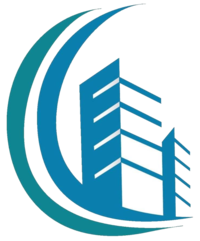
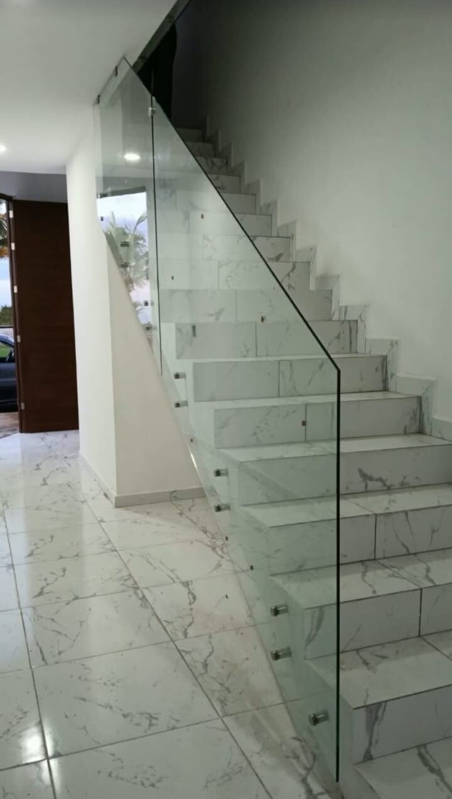
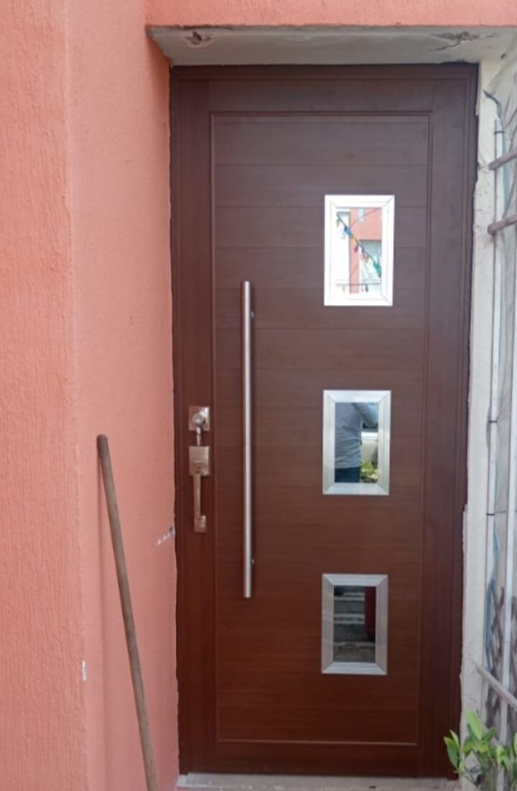
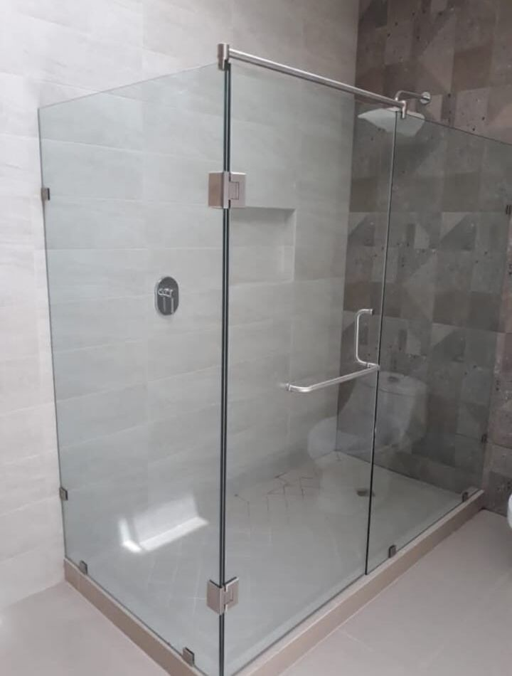
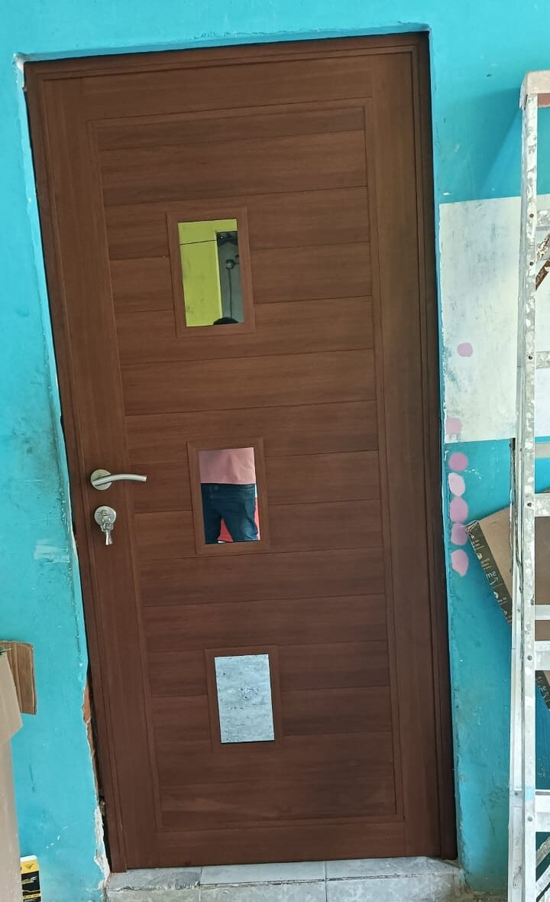
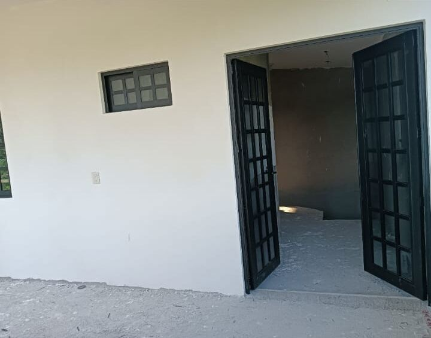
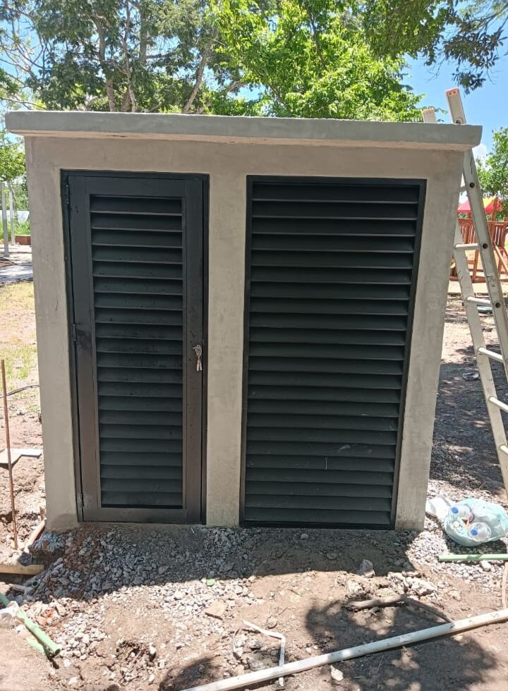

A tu medida, sin forzar nada
Cada pieza se fabrica según el hueco real de tu proyecto. Lo que se ve bien en el plano, queda igual de bien en la pared.

Aluminio Velázquez AVF
0% · Midiendo tu espacio
Taller de aluminio
Fabricamos puertas, ventanas, canceles de baño, barandales de cristal y portones eléctricos con acabados limpios, medidas exactas y el cuidado de un taller que conoce su oficio.

Barandal de cristal

Quiénes somos
Una buena puerta no solo cierra un espacio: define cómo entra la luz, cómo se siente tu casa y cuántos años se mantiene impecable. En Aluminio Velázquez AVF fabricamos cada pieza a la medida de tu proyecto, con aluminio y cristal bien trabajados.
Cada pieza se fabrica según el hueco real de tu proyecto. Lo que se ve bien en el plano, queda igual de bien en la pared.
Ligero, resistente y de bajo mantenimiento: un material pensado para el sol, la humedad y el uso diario.
Líneas rectas, herrajes firmes y cristal bien colocado. Los detalles hacen que una obra se vea terminada de verdad.
Lo que fabricamos
Desde la puerta de tu entrada hasta el portón que te recibe en casa. Elige lo que necesitas y cuéntanos tu idea.

Puertas con vidrios, de doble hoja o con cuadrícula, en blanco, negro o imitación madera. Seguras, limpias y listas para durar.
Quiero mi puerta
Ventanas fijas y corredizas con cuadrícula o vidrio liso, hechas para que entre la luz y se quede afuera el ruido y el polvo.
Cotizar mis ventanasCristal con herrajes metálicos o corredizos de aluminio con vidrio esmerilado o transparente. Tu regadera, con presencia.
Quiero mi cancelEscaleras y terrazas que se ven abiertas, ligeras y elegantes, con cristal sujeto por herrajes firmes.
Quiero mi barandalPortones automatizados hechos a la medida de tu entrada. Llegas, presionas y listo: tu acceso se abre solo.
Quiero mi portón
Puertas con celosía para cuartos de servicio, bodegas o gabinetes que necesitan ventilar sin perder seguridad ni estética.
Cotizar mi celosíaProyectos
Estas son piezas fabricadas en nuestro taller. Toca cualquiera para verla en grande.
¿Te imaginas algo así en tu casa o en tu obra?
Estoy listo, quiero mi cotizaciónPortones automatizados
Fabricamos portones eléctricos a la medida de tu entrada, con estructura de aluminio y automatización para que abrir y cerrar sea tan simple como presionar un botón.
Diseña tu puerta
Elige tipo, acabado y vidrio, mira cómo se vería y mándanos tu idea por WhatsApp. Nosotros la fabricamos a tu medida.
Cada pieza se fabrica según tus medidas reales. La vista es ilustrativa.
Por qué Aluminio Velázquez AVF
Fabricamos cada pieza en nuestro taller, con control del corte, el armado y el acabado. Lo que ves terminado en tu casa pasó antes por nuestras manos.
Trabajamos sobre el espacio real de tu proyecto para que cierre, abra y selle como debe.
Blanco, negro o imitación madera, con vidrio transparente o esmerilado según lo que busques.
Barandales y canceles con cristal bien sujeto y herrajes metálicos que se ven y se sienten sólidos.
Tu entrada también puede ser cómoda: portones eléctricos hechos a la medida de tu fachada.
Mándanos fotos y medidas, resolvemos tus dudas y te damos seguimiento sin trámites ni vueltas.
Cómo trabajamos
Cuatro pasos claros para que sepas qué sigue en cada momento de tu proyecto.
Estoy listo para empezarEscríbenos por WhatsApp con fotos del espacio y una idea de lo que quieres: puerta, ventana, cancel, barandal o portón.
Revisamos medidas, acabado y tipo de vidrio, y te preparamos tu cotización con todo claro.
Cortamos, armamos y ajustamos cada pieza en nuestro taller de aluminio, cuidando cada detalle.
Colocamos la pieza en su lugar y revisamos que todo funcione y se vea impecable antes de entregártela.
Preguntas frecuentes
¿Tu duda no está en la lista? Escríbenos y te respondemos directo, sin compromiso.
Resolver mi duda por WhatsAppSí. Cada puerta, ventana, cancel o portón se fabrica según las medidas reales de tu espacio.
Sí, fabricamos portones eléctricos y automatizados a la medida de tu entrada.
En nuestros trabajos verás aluminio blanco, negro e imitación madera, con vidrio transparente o esmerilado. Pregúntanos por otras opciones para tu proyecto.
Escríbenos por WhatsApp con fotos del espacio y medidas aproximadas, o llena el formulario de esta página y se abrirá WhatsApp con tu mensaje listo.
Atendemos de 9 a 6.
Estamos en Carretera Playa de Vacas 10, Playa de Vacas. Puedes abrir la ubicación en el mapa desde la sección de contacto.
Hablemos
Cuéntanos qué necesitas y te respondemos por WhatsApp. Mientras más detalles nos des, más precisa será tu cotización.